32. Le mode HTML de la version 12
Nous avions indiqué au début de la version 12 que nous allions développer l’application en plusieurs temps. Nous avions écrit :
- à partir des vues de l’application HTML, nous allons définir les actions que doit implémenter l’application web. Nous allons ici utiliser les vues réelles mais ce pourrait être simplement des vues sur papier ;
- à partir de ces actions, nous allons définir les URL de service de l’application HTML ;
- nous allons implémenter ces URL de service avec un serveur délivrant du jSON. Cela permet de définir l’ossature du serveur web sans se préoccuper des pages HTML à délivrer. Nous testerons ces URL de service avec Postman ;
- nous testerons ensuite notre serveur jSON avec un client console ;
- une fois que le serveur jSON aura été validé, nous passerons à l’ériture de l’application HTML ;
Nous avons un serveur jSON et XML opérationnel. On peut maintenant passer au serveur HTML. Nous allons voir que celui-ci reprend toute l’architecture développée pour le serveur jSON / XML et leur ajoute une gestion de vues HTML.
32.1. Architecture MVC
Nous allons implémenter le modèle d'architecture dit MVC (Modèle – Vue – Contrôleur) de la façon suivante :

Le traitement d'une demande d'un client se déroulera de la façon suivante :
- 1 - demande
Les URL demandées seront de la forme http://machine:port/action/param1/param2/… Le [Contrôleur principal] utilisera un fichier de configuration pour " router " la demande vers le bon contrôleur. Pour cela, il utilisera le champ [action] de l'URL. Le reste de l'URL [param1/param2/…] est formé de paramètres facultatifs qui seront transmis à l'action. Le C de MVC est ici la chaîne [Contrôleur principal, Contrôleur / Action]. Si aucun contrôleur ne peut traiter l'action demandée, le serveur web répondra que l'URL demandée n'a pas été trouvée.
-
2 - traitement
-
l'action choisie [2a] peut exploiter les paramètres parami que le [Contrôleur principal] lui a transmis. Ceux-ci pourront provenir de deux sources :
-
du chemin [/param1/param2/…] de l'URL,
-
de paramètres postés dans le corps de la requête du client ;
-
dans le traitement de la demande de l'utilisateur, l'action peut avoir besoin de la couche [métier] [2b]. Une fois la demande du client traitée, celle-ci peut appeler diverses réponses. Un exemple classique est :
-
une réponse d'erreur si la demande n'a pu être traitée correctement ;
-
une réponse de confirmation sinon ;
-
le [Contrôleur / Action] rendra sa réponse [2c] au contrôleur principal ainsi qu’un code d’état. Ces codes d’état représenteront de façon unique l’état dans lequel se trouve l’application. Ce sera soit un code de réussite, soit un code d’erreur ;
-
3 - réponse
-
selon que le client a demandé une réponse jSON, XML ou HTML, le [Contrôleur principal] instanciera [3a] le type de réponse appropriée et demandera à celle-ci d’envoyer la réponse au client. Le [Contrôleur principal] lui transmettra et la réponse et le code d’état fournis par le [Contrôleur / Action] qui a été exécuté ;
- si la réponse souhaitée est de type jSON ou XML, la réponse sélectionnée mettra en forme la réponse du [Contrôleur / Action] qu’on lui a donnée et l’enverra [3c]. Le client capable d’exploiter cette réponse peut être un script console Python ou un script Javascript logé dans une page HTML ;
- si la réponse souhaitée est de type HTML, la réponse sélectionnée sélectionnera [3b] une des vues HTML [Vuei] à l’aide du code d’état qu’on lui a donné. C’est le V de MVC. A un code d’état correspond une unique vue. Cette vue V va afficher la réponse du [Contrôleur / Action] qui a été exécuté. Elle habille avec du HTML, CSS, Javascript les données de cette réponse. On appelle ces données le modèle de la vue. C'est le M de MVC. Le client est alors le plus souvent un navigateur ;
32.2. L’arborescence des scripts du serveur HTML

- en [1], les éléments statiques du serveur HTML ;
- en [2-3], les vues V du serveur HTML. Les fragments [2] sont des éléments réutilisables dans les vues [3] ;
- en [4], un dossier qui servira aux tests des vues de façon statique ;
- en [5], le dossier des modèles M des vues V, le M de MVC ;
32.3. Présentation des vues
L’application web HTML utilise quatre vues. La 1ère vue est la vue d’authentification :
- l’action qui mène à cette 1ère vue est l’action [/init-session] [1] ;
 * le clic sur le bouton [Valider] déclenche l’action [/authentifier-utilisateur] avec deux paramètres postés [2-3] ;
* le clic sur le bouton [Valider] déclenche l’action [/authentifier-utilisateur] avec deux paramètres postés [2-3] ;
La vue du calcul de l’impôt :

- en [1], l’action [/authentifier-utilisateur] qui amène cette vue ;
- en [2], le clic sur le bouton [Valider] déclenche l’exécution de l’action [/calculer-impot] avec trois paramètres postés [2-5] ;
- le clic sur le lien [6] déclenche l’action [/lister-simulations] sans paramètres ;
- le clic sur le lien [7] déclenche l’action [/fin-session] sans paramètres ;
La 3ième vue est celle des simulations faites par l’utilisateur authentifié :

- en [1], l’action [/lister-simulations] qui amène cette vue ;
- en [2], un clic sur le lien [Supprimer] déclenche l’action [/supprimer-simulation] avec un paramètre, le n° de la simulation à supprimer dans la liste ;
- un clic sur le lien [3] déclenche l’action [/afficher-calcul-impot] sans paramètres qui réaffiche la vue du calcul de l’impôt ;
- un clic sur le lien [4] déclenche l’action [/fin-session] sans paramètres ;
La 4ième vue sera appelée la vue des erreurs inattendues :
- en [1] : l’utilisateur a tapé lui-même l’URL. Or dans cet exemple il n’y avait pas de simulations. On reçoit donc le message d’erreur [2]. On connaît ce message. On l’avait en jSON / XML. On appellera ce type d’erreur, erreur inattendue, car elle ne peut pas se produire en utilisation normale de l’application. C’est lorsque l’utilisateur tape lui-même les URL qu’elles peuvent de produire ;
 * en cas d’erreur inattendue, les liens [3-5] permettent de revenir à l’une des trois autres vues ;
* en cas d’erreur inattendue, les liens [3-5] permettent de revenir à l’une des trois autres vues ;
Rappelons les différentes URL de service du serveur jSON / XML :
Action | Rôle | Contexte d’exécution |
/init-session | Sert à fixer le type (json, xml, html) des réponses souhaitées | Requête GET Peut être émise à tout moment |
/authentifier-utilisateur | Autorise ou non un utilisateur à se connecter | Requête POST. La requête doit avoir deux paramètres postés [user, password] Ne peut être émise que si le type de la session (json, xml, html) est connu |
/calculer-impot | Fait une simulation de calcul d’impôt | Requête POST. La requête doit avoir trois paramètres postés [marié, enfants, salaire] Ne peut être émise que si le type de la session (json, xml, html) est connu et l’utilisateur authentifié |
/lister-simulations | Demande à voir la liste des simulations opérées depuis le début de la session | Requête GET. Ne peut être émise que si le type de la session (json, xml, html) est connu et l’utilisateur authentifié |
/supprimer-simulation/numéro | Supprime une simulation de la liste des simulations | Requête GET. Ne peut être émise que si le type de la session (json, xml, html) est connu et l’utilisateur authentifié |
/afficher-calcul-impot | Affiche la page HTML du calul de l’impôt | Requête GET. Ne peut être émise que si le type de la session (json, xml, html) est connu et l’utilisateur authentifié |
/fin-session | Termine la session de simulations. | Techniquement l’ancienne session web est supprimée et une nouvelle session est créée Ne peut être émise que si le type de la session (json, xml, html) est connu et l’utilisateur authentifié |
Ces différentes URL de service seront également utilisées pour le serveur HTML.
32.4. Configuration des vues
Une action est traitée par un contrôleur. Ce contrôleur rend un tuple (résultat, status_code) où :
- [résultat] est un dictionnaire de clés [action, état, réponse] ;
- [status_code] est le code de statut de la réponse HTTP qui sera faite au client ;
Dans une session HTML, la page affichée suite à une action, dépend du code d’état rendu par le cntrôleur. Cette dépendance est matérialisée dans la configuration [config] de la façon suivante :
- # les vues HTML et leurs modèles dépendent de l'état rendu par le contrôleur
- "views": [
- ** {**
- ** **# vue d'authentification
- ** *"états": [*
- ** **# /init-session réussite
- ** *700,*
- ** **# /authentifier-utilisateur échec
- ** **201
- ** ]**,
- "view_name": "views/vue-authentification.html",
- "model_for_view": ModelForAuthentificationView()
- },
- {
- # vue du calcul de l'impôt
- "états": [
- ** **# /authentifier-utilisateur réussite
- ** *200,*
- ** **# /calculer-impot réussite
- ** *300,*
- ** **# /calculer-impot échec
- ** *301,*
- ** **# /afficher-calcul-impot
- ** **800
- ** ]**,
- "view_name": "views/vue-calcul-impot.html",
- "model_for_view": ModelForCalculImpotView()
- },
- {
- # vue de la liste des simulations
- "états": [
- ** **# /lister-simulations
- ** *500,*
- ** **# /supprimer-simulation
- ** **600
- ** ]**,
- "view_name": "views/vue-liste-simulations.html",
- "model_for_view": ModelForListeSimulationsView()
- }
- ],
- # vue des erreurs inattendues
- "view-erreurs": {
- "view_name": "views/vue-erreurs.html",
- "model_for_view": ModelForErreursView()
- },
- # redirections
- "redirections": [
- ** {**
- ** *"états": [*
- ** *400, *# /fin-session réussite
- ** **],
- # redirection vers
- "to": "/init-session/html",
- }
- ],
-
}
-
ligne 2-40 : [views] est une liste de vues. Raisonnons sur la vue des lignes 3-13 :
-
ligne 11 : la vue V affichée ;
- ligne 12 : l’instance de classe chargée de générer le modèle M de cette vue ;
-
lignes 5-10 : les états qui mènent à cette vue ;
-
lignes 3-13 : la vue d’authentification ;
- lignes 14-28 : la vue du calcul de l’impôt ;
- lignes 29-39 : la vue de la liste des simulations ;
- lignes 42-46 : la vue des erreurs inattendues ;
- lignes 49-57 : certains états mènent à une vue via une redirection. C’est le cas de l’état 400 qui est celui de l’action [/fin-session] réussie. Il faut alors rediriger le client vers l’action [http://machine:port/chemin/init-session/html] ;
Nous présentons maintenant les différentes vues.
32.5. La vue d’authentification

32.5.1. Présentation de la vue
La vue d’authentification est la suivante :

La vue est composée de deux éléments qu’on appellera des fragments :
- le fragment [1] est généré par le fragment [v-bandeau.html] ;
- le fragment [2] est généré par le fragment [v-authentification.html] ;
La vue d’authentification est générée par la page [vue-authentification.html] suivante :
- <!-- document HTML -->
- <!doctype html>
- <html lang="fr">
- <head>
- <!-- Required meta tags -->
- <meta charset="utf-8">
- <meta name="viewport" content="width=device-width, initial-scale=1, shrink-to-fit=no">
- <!-- Bootstrap CSS -->
- <link rel="stylesheet" href="https://maxcdn.bootstrapcdn.com/bootstrap/4.4.1/css/bootstrap.min.css">
- <title>Application impôts</title>
- </head>
- <body>
- <div class="container">
- <!-- bandeau -->
- {% include "fragments/v-bandeau.html" %}
- <!-- ligne à deux colonnes -->
- <div class="row">
- <div class="col-md-9">
- {% include "fragments/v-authentification.html" %}
- </div>
- </div>
- <!-- si erreur - on affiche une alerte d'erreur -->
- {% if modèle.error %}
- <div class="row">
- <div class="col-md-9">
- <div class="alert alert-danger" role="alert">
- Les erreurs suivantes se sont produites :
- <ul>{{modèle.erreurs|safe}}</ul>
- </div>
- </div>
- </div>
- {% endif %}
- </div>
- </body>
- </html>
Commentaires
- ligne 2 : un document HTML commence avec cette ligne ;
- lignes 3-36 : la page HTML est encapsulée dans les balises <html> </html> ;
- lignes 4-11 : entête (head) du document HTML ;
- ligne 6 : la balise <meta charset> indique ici que le document est codé en UTF-8 ;
- ligne 7 : la balise <meta name=’viewport’> fixe l’affichage initial de la vue : sur toute la largeur de l’écran qui l’affiche (width) à sa taille initiale (initial-scale) sans redimensionnement pour s’adapter à une taille plus petite d’écran (shrink-to-fit) ;
- ligne 9 : la balise <link rel=’stylesheet’> fixe le fichier CSS qui gouverne l’apparence de la vue. Nous utilisons ici le framework CSS Bootstrap 4.4.1 [https://getbootstrap.com/docs/4.0/getting-started/introduction/] ;
- ligne 10 : la balise <title> fixe le titre de la page :

- lignes 13-35 : le corps de la page web est encapsulé dans les balises <body></body> ;
- lignes 14-34 : la balise <div> délimite une section de la page affichée. Les attributs [class] utilisés dans la vue se réfèrent tous au framework CSS Bootstrap. La balise <div class=’container’> (ligne 14) délimite un conteneur Bootstrap ;
- ligne 26 : on inclut le fragment [v-bandeau.html]. Ce fragment génère le bandeau [1] de la page. Nous le décrirons bientôt ;
- lignes 18-22 : la balise <div class=’row’> délimite une ligne Bootstrap. Ces lignes sont constituées de 12 colonnes ;
- ligne 19 : la balise <div class=’col-md-9’> délimite une section de 9 colonnes ;
- ligne 20 : on inclut le fragment [v-authentification.html] qui affiche le formulaire d’authentification [2] de la page. Nous le décrirons bientôt ;
- lignes 24-33 : le code HTML de ces lignes n’est utilisé que si [modèle.error] vaut True. Nous procèderons toujours ainsi : le modèle d’une vue HTML sera encapsulé dans un dictionnaire [modèle] ;
- lignes 24-33 : l’authentification échoue si l’utilisateur entre des identifiants incorrects. Dans ce cas, la vue d’authentification est réaffichée avec un message d’erreur. L’attribut [modèle.error] indique s’il faut afficher ce message d’erreur ;
- lignes 27-30 : délimitent une zone à fond rose (class="alert alert-danger") (ligne 27) ;

- ligne 28 : un texte ;
- ligne 29 : la balise HTML <ul> (unordered list) affiche une liste à puces. Chaque élément de la liste doit avoir la syntaxe <li>élément</li>. On affiche ici la valeur de [modèle.erreurs]. Cette valeur est filtrée (présence de |) par le filtre [safe]. Par défaut, lorsqu’une chaîne de caractères doit être envoyée au navigateur, Flask ‘neutralise’ toutes les balises HTML qui pourraient s’y trouver afin que le navigateur ne les interprète pas. Mais parfois on veut les interpréter. Ce sera ici le cas où la chaîne [modèle.erreurs] contiendra des balises HTML <li> et </li> qui servent à délimiter un élément de la liste. Dans ce cas, on utilise le filtre [safe] qui dit à Flask que la chaîne à afficher est sûre (safe) et que donc il ne doit pas neutraliser les balises HTML qu’il y trouvera ;
Retenons de ce code les éléments dynamiques à définir :
- [modèle.error] : pour afficher un message d’erreur ;
- [modèle.erreurs] : une liste (au sens HTML du terme) de messages d’erreur ;
32.5.2. Le fragment [v-bandeau.html]
Le fragment [v-bandeau.html] affiche le bandeau supérieur de toutes les vues de l’application web :

Le code du fragment [v-bandeau.html] est le suivant :
- <!-- Bootstrap Jumbotron -->
- <div class="jumbotron">
- <div class="row">
- <div class="col-md-4">
- <img src="{{ url_for('static', filename='images/logo.jpg') }}" alt="Cerisier en fleurs"/>
- </div>
- <div class="col-md-8">
- <h1>
- Calculez votre impôt
- </h1>
- </div>
- </div>
- </div>
Commentaires
- lignes 2-13 : le bandeau est encapsulé dans une section Bootstrap de type Jumbotron [<div class="jumbotron">]. Cette classe Bootstrap stylise d’une façon particulière le contenu affiché pour le faire ressortir ;
- lignes 3-12 : une ligne Bootstrap ;
- lignes 4-6 : une image [img] est placée dans les quatre premières colonnes de la ligne ;
- ligne 5 : la syntaxe :
utilise la fonction [url_for] de Flask. Ici, sa valeur sera l’URL du fichier [images/logo.pg] du dossier [static] ;
- lignes 7-11 : les 8 autres colonnes de la ligne (on rappelle qu’il y en a 12 au total) serviront à placer un texte (ligne 9) en gros caractères (<h1>, lignes 8-10) ;
32.5.3. Le fragment [v-authentification.html]
Le fragment [v-authentification.html] affiche le formulaire d’authentification de l’application web :
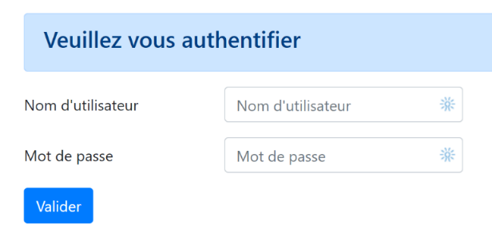
Le code du fragment [v-authentification.html] est le suivant :
- <!-- formulaire HTML - on poste ses valeurs avec l'action [authentifier-utilisateur] -->
- <form method="post" action="/authentifier-utilisateur">
- <!-- titre -->
- <div class="alert alert-primary" role="alert">
- <h4>Veuillez vous authentifier</h4>
- </div>
- <!-- formulaire Bootstrap -->
- <fieldset class="form-group">
- <!-- 1ère ligne -->
- <div class="form-group row">
- <!-- libellé -->
- <label for="user" class="col-md-3 col-form-label">Nom d'utilisateur</label>
- <div class="col-md-4">
- <!-- zone de saisie texte -->
- <input type="text" class="form-control" id="user" name="user"
- placeholder="Nom d'utilisateur" value="{{ modèle.login }}" required>
- </div>
- </div>
- <!-- 2ième ligne -->
- <div class="form-group row">
- <!-- libellé -->
- <label for="password" class="col-md-3 col-form-label">Mot de passe</label>
- <!-- zone de saisie texte -->
- <div class="col-md-4">
- <input type="password" class="form-control" id="password" name="password"
- placeholder="Mot de passe" required>
- </div>
- </div>
- <!-- bouton de type [submit] sur une 3ième ligne -->
- <div class="form-group row">
- <div class="col-md-2">
- <button type="submit" class="btn btn-primary">Valider</button>
- </div>
- </div>
- </fieldset>
- </form>
Commentaires
-
lignes 2-39 : la balise <form> délimite un formulaire HTML. Celui-ci a en général les caractéristiques suivantes :
-
il définit des zones de saisies (balises <input> des lignes 17 et 27 ;
- il a un bouton de type [submit] (ligne 34) qui envoie les valeurs saisies à l’URL indiquée dans l’attribut [action] de la balise [form] (ligne 2). La méthode HTTP utilisée pour requêter cette URL est précisée dans l’attribut [method] de la balise [form] (ligne 2) ;
- ici, lorsque l’utilisateur va cliquer sur le bouton [Valider] (ligne 34), le navigateur va poster (ligne 2) les valeurs saisies dans le formulaire à l’URL [/authentifier-utilisateur] (ligne 2) ;
-
les valeurs postées sont les valeurs saisies par l’utilisateur dans les zones de saisie des lignes 17 et 27. Elles seront postées dans le corps de la requête HTTP que fera le navigateur sous la forme [x-www-forl-urlencoded]. Les noms des paramètres [user, password] sont ceux des attributs [name] des zones de saisie des lignes 17 et 27 ;
-
ligne 5-7 : une section Bootstrap pour afficher un titre dans un fond bleu :
- lignes 10-37 : un formulaire Bootstrap. Tous les éléments du formulaire vont alors être stylisés d’une certaine façon ;
 * lignes 12-20 : définissent la 1re ligne Bootstrap du formulaire :
* lignes 12-20 : définissent la 1re ligne Bootstrap du formulaire :

- la ligne 14 définit le libellé [1] sur trois colonnes. L’attribut [for] de la balise [label] relie le libellé à l’attribut [id] de la zone de saisie de la ligne 17 ;
- lignes 15-19 : met la zone de saisie dans un ensemble de quatre colonnes ;
-
lignes 17-18 : la balise HTML [input] décrit une zone de saisie. Elle a plusieurs paramètres :
-
[type=’text’] : c’est une zone de saisie texte. On peut y taper n’importe quoi ;
- [class=’form-control’] : style Bootstrap pour la zone de saisie ;
- [id=’user’] : identifiant de la zone de saisie. Cet identifiant est en général utilisé par le CSS et le code Javascript ;
- [name=’user’] : nom de la zone de saisie. C’est sous ce nom que la valeur saisie par l’utilisateur sera postée par le navigateur [user=xx] ;
- [placeholder=’invite’] : le texte affiché dans la zone de saisie lorsque l’utilisateur n’a encore rien tapé ;

- [value=’valeur’] : le texte ‘valeur’ sera affiché dans la zone de saisie dès que celle-ci sera affichée, avant donc que l’utilisateur ne saisisse autre chose. Ce mécanisme est utilisé en cas d’erreur pour afficher la saisie qui a provoqué l’erreur. Ici cette valeur sera la valeur de la variable [modèle.login] ;
-
[required] : exige que l’utilisateur mette une valeur pour que le formulaire puisse être envoyé au serveur :
-
lignes 21-30 : un code analogue pour la saisie du mot de passe ;
- ligne 27 : [type=’password’] fait qu’on a une zone de saisie texte (on peut taper n’importe quoi) mais les caractètres tapés sont cachés :
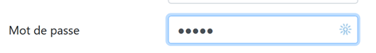
- lignes 32-36 : une 3e ligne Bootstrap pour le bouton [Valider] ;
- ligne 34 : parce qu’il a l’attribut [type=submit], un clic sur ce bouton déclenche l’envoi au serveur par le navigateur des valeurs saisies comme il a été expliqué précédemment. L’attribut CSS [class="btn btn-primary"] affiche un bouton bleu :

Il nous reste à expliquer une dernière chose. Ligne 2, l’attribut [action="/authentifier-utilisateur"] définit une URL incomplète (elle ne commence pas par http://machine:port/chemin). Dans notre exemple, toutes les URL de l’application sont de la forme [http://machine:port/chemin/action/param1/param2/..] où [http://machine:port/chemin] est la racine des URL de service. Dans [action="/authentifier-utilisateur"] nous avons une URL absolue ç-à-d mesurée à partir de la racine des URL. L’URL complète du POST est donc [http://machine:port/chemin/authentifier-utilisateur] et c’est ce qu’utilisera le navigateur.
On retiendra que ce fragment utilise le modèle [modèle.login].
32.5.4. Tests visuels
On peut procéder aux tests des vues bien avant leur intégration dans l’application. Il s’agit ici de tester leur aspect visuel. Nous rassemblerons toutes les vues de test dans le dossier [tests_views] du projet :

Pour tester la vue V [vue-authentification.html], il nous faut créer le modèle M de données qu’elle va afficher. On le fait avec le script [test_vue_authentification.py] :
- from flask import Flask, render_template, make_response
- # application Flask
- app = Flask(__name__, template_folder="../templates", static_folder="../static")
- # Home URL
- @app.route('/')
- def index():
- # on encapsule les données de la pagé dans modèle
- modèle = {}
- # identifiant utilisateur
- modèle["login"] = "albert"
- # liste d'erreurs
- modèle["error"] = True
- erreurs = ["erreur1", "erreur2"]
- # on construit une liste HTML des erreurs
- content = ""
- for erreur in erreurs:
- content += f"<li>{erreur}</li>"
- modèle["erreurs"] = content
- # affichage de la page
- return make_response(render_template("views/vue-authentification.html", modèle=modèle))
- # main
- if __name__ == '__main__':
- app.config.update(ENV="development", DEBUG=True)
-
app.run()
Commentaires
- lignes 1-3 : on crée une application Flask dont le seul but est d’afficher la vue [vue-authentification.html] (ligne 22) ;
- ligne 7 : l’application n’a qu’une unique URL de service ;
-
lignes 9-20 : la vue d’authentification a des parties dynamiques contrôlées par l’objet [modèle]. On appelle cet objet le modèle de la vue. Selon l’une des deux définitions données pour le sigle MVC, on a là le M du MVC. Lors de la définition de la vue [vue-authentification.html], nous avions identifié trois valeurs dynamiques :
-
[modèle.error] : booléen indiquant s’il faut afficher un message d’erreur ;
- [modèle.erreurs] : une liste HTML de messages d’erreur ;
- [modèle.login] : le login d’un utilisateur ;
Il nous faut donc définir ces trois valeurs dynamiques.
- lignes 9-20 : on définit les trois éléments dynamiques de la vue d’authentification ;
Pour faire le test, on lance le script [tests_views/test_vue_authentification.py] et on demande l’URL [/localhost:5000/] :
On poursuit ces tests visuels jusqu’à être satisfait du résultat.

32.5.5. Calcul du modèle de la vue
Une fois l’aspect visuel de la vue déterminé, on peut procéder au calcul du modèle de la vue en conditions réelles. Les modèles des vues seront générées par des classes rassemblées dans le dossier [models_for_views] :

Chaque classe générant un modèle de vue respectera l’interface [InterfaceModelForView] suivante :
- from abc import ABC, abstractmethod
- from flask import Request
- from werkzeug.local import LocalProxy
- class InterfaceModelForView(ABC):
- @abstractmethod
- def get_model_for_view(self, request: Request, session: LocalProxy, config: dict, résultat: dict) -> dict:
-
pass
-
lignes 8-10 : la méthode [get_model_for_view] est chargée de produire un modèle de vue encapsulé dans un dictionnaire. Elle reçoit pour cela les informations suivantes :
-
[request, session, config] sont les mêmes paramètres utilisés par le contrôleur de l’action. Ils sont donc également transmis au modèle ;
- le contrôleur a produit un résultat [résultat] qui est également transmis au modèle. Ce résultat contient un élément important [état] qui indique comme s’est passée l’exécution de l’action en cours. Le modèle va utiliser cette information ;
Nous avons vu que dans la configuration [config] de l’application, les codes d’état rendus par les contrôleurs sont utilisés pour désigner la vue HTML à afficher :
- # les vues HTML et leurs modèles dépendent de l'état rendu par le contrôleur
- "views": [
- ** {**
- ** **# vue d'authentification
- ** *"états": [*
- ** **# /init-session réussite
- ** *700,*
- ** **# /authentifier-utilisateur échec
- ** **201
- ** ]**,
- "view_name": "views/vue-authentification.html",
- "model_for_view": ModelForAuthentificationView()
- },
- {
- # vue du calcul de l'impôt
- "états": [
- ** **# /authentifier-utilisateur réussite
- ** *200,*
- ** **# /calculer-impot réussite
- ** *300,*
- ** **# /calculer-impot échec
- ** *301,*
- ** **# /afficher-calcul-impot
- ** **800
- ** ]**,
- "view_name": "views/vue-calcul-impot.html",
- "model_for_view": ModelForCalculImpotView()
- },
- {
- # vue de la liste des simulations
- "états": [
- ** **# /lister-simulations
- ** *500,*
- ** **# /supprimer-simulation
- ** **600
- ** ]**,
- "view_name": "views/vue-liste-simulations.html",
- "model_for_view": ModelForListeSimulationsView()
- }
- ],
- # vue des erreurs inattendues
- "view-erreurs": {
- "view_name": "views/vue-erreurs.html",
- "model_for_view": ModelForErreursView()
- },
- # redirections
- "redirections": [
- ** {**
- ** *"états": [*
- ** *400, *# /fin-session réussite
- ** ]**,
- # redirection vers
- "to": "/init-session/html",
- }
- ],
- }
Ce sont donc les codes d’état [700, 201] (lignes 7 et 9) qui font afficher la vue d’authentification. Pour retrouver la signification de ces codes, on peut s’aider des tests [Postman] réalisés sur l’application jSON :
- [init-session-json-700] : 700 est le code d’état à l’issue d’une action [init-session] réussie : on présente alors le formulaire d’authentification vide ;
- [authentifier-utilisateur-201] : 201 est le code d’état à l’issue d’une action [authentifier-utilisateur] ayant échoué (identifiants non reconnus) : on présente alors le formulaire d’authentification pour qu’il soit corrigé ;
Maintenant que nous savons à quels moments doit être affiché le formulaire d’authentification, on peut calculer son modèle dans [ModelForAuthentificationView] (ligne 12) :
- from flask import Request
- from werkzeug.local import LocalProxy
- from InterfaceModelForView import InterfaceModelForView
- class ModelForAuthentificationView(InterfaceModelForView):
- def get_model_for_view(self, request: Request, session: LocalProxy, config: dict, résultat: dict) -> dict:
- # on encapsule les données de la pagé dans modèle
- modèle = {}
- # état de l'application
- état = résultat["état"]
- # le modèle dépend de l'état
- if état == 700:
- # cas de l'affichage du formulaire vide
- modèle["login"] = ""
- # il n'y pas d'erreur à afficher
- modèle["error"] = False
- elif état == 201:
- # authentification erronée
- # on réaffiche l'utilisateur initialement saisi
- modèle["login"] = request.form.get("user")
- # il y a une erreur à afficher
- modèle["error"] = True
- # liste HTML de msg d'erreur
- erreurs = ""
- for erreur in résultat["réponse"]:
- erreurs += f"<li>{erreur}</li>"
- modèle["erreurs"] = erreurs
- # on rend le modèle
- return modèle
Commentaires
- ligne 8 : la méthode [get_model_for_view] de la vue d’authentification doit fournir un dictionnaire avec trois clés [error, erreurs, login]. Ce calcul se fait à partir du code d’état rendu par le contrôleur de l’action ;
- ligne 12 : on récupère le code d’état rendu par le contrôleur qui a traité l’action en cours ;
- lignes 14-29 : le modèle dépend de ce code d’état ;
- lignes 15-18 : cas où on doit afficher un formulaire d’authentification vierge ;
- lignes 20-29 : cas de l’authentification erronée : on raffiche l’identifiant saisi pour l’utilisateur et on affiche un message d’erreur. L’utilisateur au clavier peut alors réessayer une autre authentification ;
- ligne 22 : l’identifiant initialement saisi par l’utilisateur peut être retrouvé dans la requête du client ;
- ligne 24 : on signale qu’il y a des erreurs à afficher ;
- lignes 26-29 : en cas d’erreur, résultat[‘réponse’] contient une liste d’erreurs ;
32.5.6. Génération des réponses HTML
Revenons au modèle MVC de l’application HTML :
- en 2 (2a, 2b) : le contrôleur exécute une action ;
* en 3 (3a, 3b, 3c) : une vue est choisie et envoyée au client ;
En [3a], un type de réponse (jSON, XML, HTML) est choisi. Nous avons vu comment les réponses jSON et XML étaient générées mais pas encore les réponses HTML. Celles-ci sont générées par la classe [HtmlResponse] :

Rappelons comment dans le script principal [main] le type de réponse à faire à l’utilisateur est déterminé :
- ….
- # on construit la réponse à envoyer
- response_builder = config["responses"][type_response]
- response, status_code = response_builder \
- .build_http_response(request, session, config, status_code, résultat)
- # on envoie la réponse
- return response, status_code
où, ligne 3, config[‘responses’] est le dictionnaire suivant :
- # les différents types de réponse (json, xml, html)
- "responses": {
- "json": JsonResponse(),
- "html": HtmlResponse(),
- "xml": XmlResponse()
- },
C’est donc la classe [HtmlResponse] qui génère la réponse HTML. Son code est le suivant :
- # dictionnaire des réponses HTML selon l'état contenu dans le résultat
- from flask import make_response, render_template
- from flask.wrappers import Response
- from werkzeug.local import LocalProxy
- from InterfaceResponse import InterfaceResponse
- class HtmlResponse(InterfaceResponse):
- def build_http_response(self, request: LocalProxy, session: LocalProxy, config: dict, status_code: int,
- résultat: dict) -> (Response, int):
- # la réponse HTML dépend du code d'état rendu par le contrôleur
- état = résultat["état"]
- # faut-il faire une redirection ?
- for redirection in config["redirections"]:
- # états nécessitant une redirection
- états = redirection["états"]
- if état in états:
- # il faut faire une redirection
- return redirect(f"/{redirection['to']}"), status.HTTP_302_FOUND
- # à un état, correspond une vue
- # on cherche celle-ci dans la liste des vues
- views_configs = config["views"]
- trouvé = False
- i = 0
- # on parcourt la liste des vues
- nb_views = len(views_configs)
- while not trouvé and i < nb_views:
- # vue n° i
- view_config = views_configs[i]
- # états associés à la vue n° i
- états = view_config["états"]
- # est-ce que l'état cherché se trouve dans les états associés à la vue n° i
- if état in états:
- trouvé = True
- else:
- # vue suivante
- i += 1
- # trouvé ?
- if not trouvé:
- # si aucune vue n'existe pour l'état actuel de l'application
- # on rend la vue d'erreurs
- view_config = config["view-erreurs"]
- # on calcule le modèle de la vue à afficher
- model_for_view = view_config["model_for_view"]
- modèle = model_for_view.get_model_for_view(request, session, config, résultat)
- # on génère le code HTML de la réponse
- html = render_template(view_config["view_name"], modèle=modèle)
- # on construit la réponse HTTP
- response = make_response(html)
- response.headers['Content-Type'] = 'text/html; charset=utf-8'
- # on rend le résultat
-
return response, status_code
-
line 11 : la méthode [build_http_response] chargée de générer la réponse HTML reçoit les paramètres suivants :
-
[request, session, dict] : ce sont les paramètres utilisés par le contrôleur pour traiter l’action en cours ;
-
[status_code, résultat] sont les deux résultats produits par ce même contrôleur ;
-
ligne 14 : comme nous l’avons dit, la réponse HTML du serveur dépend du code d’état contenu dans le dictionnaire [résultat] ;
- lignes 16-22 : on gère d’abord les redirections. Pour l’instant nous allons ignorer ce cas jusqu’au moment où on rencontrera un exemple de redirection. On notera que les redirections sont typiquement un cas d’usage du serveur HTML. On ne rencontre pas ce cas avec les serveurs jSON ouXML ;
- lignes 24-41 : on cherche parmi les vues celle dont la liste [états] contient l’état recherché ;
- lignes 42-46 : si aucune vue n’a été trouvée, il s’agit d’une erreur inattendue. Prenons un exemple. Dans le fonctionnement normal de l’application, l’action [/supprimer-simulation] ne doit jamais boguer. En effet, nous allons voir que cette suppression de simulations se fait à partir de liens générés par le code. Ces liens sont corrects et ne peuvent mener à une erreur. Cependant, nous l’avons vu, l’utilisateur peut taper directement l’URL [/supprimer-simulation/id] et provoquer ainsi une erreur. Dans ce cas, le contrôleur [SupprimerSimulationController] rend un code d’état 601. Or ce code d’état ne se trouve pas dans la liste des codes d’état menant à l’affichage d’une page HTML. Ce sera donc la vue d’erreur qui sera affichée. Elle est définie ainsi dans la configuration :
- ligne 49 : une fois qu’on connaît la vue à afficher, on récupère la classe générant son modèle. Elle aussi se trouve dans la configuration [config] ;
- ligne 50 : une fois cette classe trouvée, on génère le modèle de la vue ;
- ligne 52 : une fois le modèle M de la vue V calculé, on peut générer le code HTML de la vue ;
- lignes 54-55 : on construit la réponse HTTP de la réponse avec un corps HTML ;
- lignes 56-57 : on rend la réponse HTTP avec son code de statut ;
32.5.7. Tests [Postman]
Nous allons exécuter des requêtes produidant les codes [700, 201] qui affichent la vue d’authentification :
- [init-session-html-700] : 700 est le code d’état à l’issue d’une action [init-session] réussie : on présente alors le formulaire d’authentification vide ;
- [authentifier-utilisateur-201] : 201 est le code d’état à l’issue d’une action [authentifier-utilisateur] ayant échoué (identifiants non reconnus) : on présente alors le formulaire d’authentification pour qu’il soit corrigé ;
Il suffit de les réutiliser et de voir s’ils affichent bien la vue d’authentification. On montre ici deux cas :
Cas 1 : [init-session-html-700], début d’une session HTML ;

La réponse est la suivante :

- en [5], le mode [Preview] permet de visualiser la page HTML reçue ;
- en [6], on a bien le formulaire vide attendu ;
- en [7], Postman n’a pas suivi le lien de l’image de la page ;
- en [8], le mode [Raw] donne accès au HTML reçu ;

- en [3], le lien que Postman n’a pas chargé. Il a affiché la valeur de l’attribut [alt=alternative] qui est affichée lorsque l’image ne peut être chargée. Ici c’est plutôt que Postman n’a pas voulu la charger. On peut le vérifier en demandant l’URL [http://localhost :5000/static/images.logo.jpg] avec Postman :
Cas 2 : [authentifier-utilisateur-201], authentification erronée
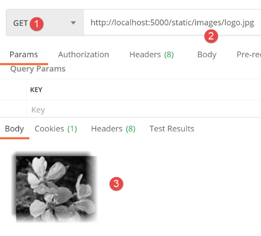
Maintenant, faisons une authentification erronée, après avoit fait une initialisation de session HTML réussie :

Ci-dessus :
- en [4,7] : la requête poste la chaîne [user=bernard&password=thibault] ;
La réponse est la suivante :

- en [4], un message d’erreur est affiché ;
- en [3], l’utilisateur erroné a été réaffiché ;
32.5.8. Conclusion
Nous avons pu tester la vue [vue-authentification.html] sans avoir écrit les autres vues. Cela a été possible parce que :
- tous les contrôleurs sont écrits ;
- [Postman] nous permet d’émettre des requêtes vers le serveur sans avoir besoin de toutes les vues. Lorsqu’on écrit les contrôleurs, il faut être prêt à traiter des requêtes qu’aucune vue ne permettrait. On ne doit jamais se dire a priori « cette requête est impossible » . Il faut vérifier ;
32.6. La vue de calcul de l’impôt
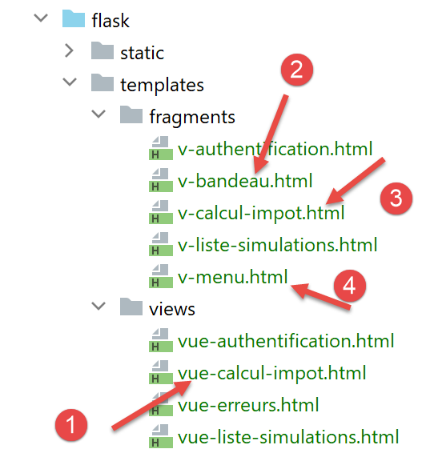
32.6.1. Présentation de la vue
La vue de calcul de l’impôt est la suivante :

La vue a trois parties :
- 1 : le bandeau supérieur est généré par le fragment [v-bandeau.html] déjà présenté ;
- 2 : le formulaire de calcul de l’impôt généré par le fragment [v-calcul-impot.html] ;
- 3 : un menu présentant deux liens, généré par le fragment [v-menu.html] ;
La vue de calcul de l’impôt est générée par le code [vue-calcul-impot.html] suivant :
- <!-- document HTML -->
- <!doctype html>
- <html lang="fr">
- <head>
- <!-- Required meta tags -->
- <meta charset="utf-8">
- <meta name="viewport" content="width=device-width, initial-scale=1, shrink-to-fit=no">
- <!-- Bootstrap CSS -->
- <link rel="stylesheet" href="https://maxcdn.bootstrapcdn.com/bootstrap/4.4.1/css/bootstrap.min.css">
- <title>Application impôts</title>
- </head>
- <body>
- <div class="container">
- <!-- bandeau -->
- {% include "fragments/v-bandeau.html" %}
- <!-- ligne à deux colonnes -->
- <div class="row">
- <!-- le menu -->
- <div class="col-md-3">
- {% include "fragments/v-menu.html" %}
- </div>
- <!-- le formulaire de calcul -->
- <div class="col-md-9">
- {% include "fragments/v-calcul-impot.html" %}
- </div>
- </div>
- <!-- cas du succès -->
- {% if modèle.success %}
- <!-- on affiche une alerte de réussite -->
- <div class="row">
- <div class="col-md-3">
- </div>
- <div class="col-md-9">
- <div class="alert alert-success" role="alert">
- {{modèle.impôt}}</br>
- {{modèle.décôte}}</br>
- {{modèle.réduction}}</br>
- {{modèle.surcôte}}</br>
- {{modèle.taux}}</br>
- </div>
- </div>
- </div>
- {% endif %}
- {% if modèle.error %}
- <!-- liste des erreurs sur 9 colonnes -->
- <div class="row">
- <div class="col-md-3">
- </div>
- <div class="col-md-9">
- <div class="alert alert-danger" role="alert">
- Les erreurs suivantes se sont produites :
- <ul>{{modèle.erreurs | safe}}</ul>
- </div>
- </div>
- </div>
- {% endif %}
- </div>
- </body>
- </html>
Commentaires
- nous ne commentons que des nouveautés encore non rencontrées ;
- ligne 16 : inclusion du bandeau supérieur de la vue dans la première ligne Bootstrap de la vue ;
- ligne 21 : inclusion du menu qui occupera trois colonnes de la seconde ligne Bootstrap de la vue (lignes 18, 20) ;
- ligne 25 : inclusion du formulaire de calcul d’impôt qui occupera neuf colonnes (ligne 24) de la seconde ligne Bootstrap de la vue (ligne 18) ;
- lignes 30-46 : si le calcul de l’impôt réussit [modèle.success=True], alors le résultat du calcul de l’impôt est affiché dans un cadre vert (lignes 37-43). Ce cadre est dans la troisième ligne Bootstrap de la vue (ligne 32) et occupe neuf colonnes (ligne 36) à droite de trois colonnes vides (lignes 33-35). Ce cadre sera donc sous le formulaire de calcul de l’impôt ;
- lignes 48-61 : si le calcul de l’impôt échoue [modèle.error=True], alors un message d’erreur est affiché dans un cadre rose (lignes 55-58). Ce cadre est dans la troisième ligne Bootstrap de la vue (ligne 50) et occupe neuf colonnes (ligne 54) à droite de trois colonnes vides (lignes 51-53). Ce cadre sera donc lui aussi sous le formulaire de calcul de l’impôt ;
32.6.2. Le fragment [v-calcul-impot.html]
Le fragment [v-calcul-impot.html] affiche le formulaire de calcul de l’impôt de l’application web :
Le code du fragment [v-calcul-impot.html] est le suivant :
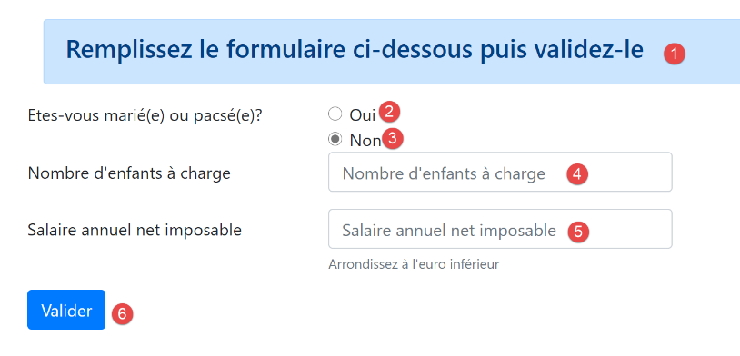
- <!-- formulaire HTML posté -->
- <form method="post" action="/calculer-impot">
- <!-- message sur 12 colonnes sur fond bleu -->
- <div class="col-md-12">
- <div class="alert alert-primary" role="alert">
- <h4>Remplissez le formulaire ci-dessous puis validez-le</h4>
- </div>
- </div>
- <!-- éléments du formulaire -->
- <fieldset class="form-group">
- <!-- première ligne sur 9 colonnes -->
- <div class="row">
- <!-- libellé sur 4 colonnes -->
- <legend class="col-form-label col-md-4 pt-0">Etes-vous marié(e) ou pacsé(e)?</legend>
- <!-- boutons radio sur 5 colonnes-->
- <div class="col-md-5">
- <div class="form-check">
- <input class="form-check-input" type="radio" name="marié" id="gridRadios1" value="oui" {{modèle.checkedOui}}>
- <label class="form-check-label" for="gridRadios1">
- Oui
- </label>
- </div>
- <div class="form-check">
- <input class="form-check-input" type="radio" name="marié" id="gridRadios2" value="non" {{modèle.checkedNon}}>
- <label class="form-check-label" for="gridRadios2">
- Non
- </label>
- </div>
- </div>
- </div>
- <!-- deuxième ligne sur 9 colonnes -->
- <div class="form-group row">
- <!-- libellé sur 4 colonnes -->
- <label for="enfants" class="col-md-4 col-form-label">Nombre d'enfants à charge</label>
- <!-- zone de saisie numérique du nombre d'enfants sur 5 colonnes -->
- <div class="col-md-5">
- <input type="number" min="0" step="1" class="form-control" id="enfants" name="enfants" placeholder="Nombre d'enfants à charge" value="{{modèle.enfants}}" required>
- </div>
- </div>
- <!-- troisème ligne sur 9 colonnes -->
- <div class="form-group row">
- <!-- libellé sur 4 colonnes -->
- <label for="salaire" class="col-md-4 col-form-label">Salaire annuel net imposable</label>
- <!-- zone de saisie numérique pour le salaire sur 5 colonnes -->
- <div class="col-md-5">
- <input type="number" min="0" step="1" class="form-control" id="salaire" name="salaire" placeholder="Salaire annuel net imposable" aria-describedby="salaireHelp" value="{{modèle.salaire}}" required>
- <small id="salaireHelp" class="form-text text-muted">Arrondissez à l'euro inférieur</small>
- </div>
- </div>
- <!-- quatrième ligne, bouton [submit] sur 5 colonnes -->
- <div class="form-group row">
- <div class="col-md-5">
- <button type="submit" class="btn btn-primary">Valider</button>
- </div>
- </div>
- </fieldset>
- </form>
Commentaires
-
ligne 2 : le formulaire HTML sera posté (attribut [method]) à l’URL [/calculer-impot] (attribut [action]). Les valeurs postées seront les valeurs des zones de saisie :
-
la valeur du bouton radio coché sous la forme :
-
[marié=oui] si le bouton radio [Oui] est coché (lignes 17-22). [marié] est la valeur de l’attribut [name] de la ligne 18, [oui] la valeur de l’attribut [value] de la ligne 18 ;
-
[marié=non] si le bouton radio [Non] est coché (lignes 23-28). [marié] est la valeur de l’attribut [name] de la ligne 24, [non] la valeur de l’attribut [value] de la ligne 24 ;
-
la valeur de la zone de saisie numérique de la ligne 37 sous la forme [enfants=xx] où [enfants] est la valeur de l’attribut [name] de la ligne 37, et [xx] la valeur saisie par l’utilisateur au clavier ;
- la valeur de la zone de saisie numérique de la ligne 46 sous la forme [salaire=xx] où [salaire] est la valeur de l’attribut [name] de la ligne 46, et [xx] la valeur saisie par l’utilisateur au clavier ;
Finalement, la valeur postée aura la forme [marié=xx&enfants=yy&salaire=zz].
-
les valeurs saisies seront postées lorsque l’utilisateur cliquera sur le bouton de type [submit] de la ligne 53 ;
-
lignes 16-30 : les deux boutons radio :

Les deux boutons radio font partie du même groupe de boutons radio car ils ont le même attribut [name] (lignes 18, 24). Le navigateur s’assure que dans un groupe de boutons radio, un seul est coché à un moment donné. Donc cliquer sur l’un désactive celui qui était coché auparavant ;
- ce sont des boutons radio à cause de l’attribut [type="radio"] (lignes 18, 24) ;
-
à l’affichage du formulaire (avant saisie), l’un des boutons radio devra être coché : il suffit pour cela d’ajouter l’attribut [checked=’checked’] à la balise <input type="radio"> concernée. Cela est réalisé avec des variables dynamiques :
-
[modèle.checkedOui] à la ligne 18 ;
- [modèle->checkedNon] à la ligne 24 ;
Ces variables feront partie du modèle de la vue.
- ligne 37 : une zone de saisie numérique [type="number"] avec une valeur minimale de 0 [min="0"]. Dans les navigateurs récents, cela signifie que l’utilisateur ne pourra saisir qu’un nombre >=0. Sur ces mêmes navigateurs récents, la saisie peut être faite avec un variateur qu’on peut cliquer à la hausse ou à la baisse. L’attribut [step="1"] de la ligne 37 indique que le variateur opèrera avec des sauts de 1 unité. Cela a pour conséquence que le variateur ne prendra pour valeur que des entiers progressant de 0 à n avec un pas de 1. Pour la saisie manuelle, cela signifie que les nombres avec virgule ne seront pas acceptés ;
- ligne 37 : lors de certains affichages, la zone de saisie des enfants devra être préremplie avec la dernière saisie faite dans cette zone. On utilise pour cela l’attribut [value] qui fixe la valeur à afficher dans la zone de saisie. Cette valeur sera dynamique et générée par la variable [modèle.enfants] ;
 * ligne 37 : l’attribut [required] force l’utilisateur à saisir une donnée pour que le formulaire soit validé ;
* ligne 46 : mêmes explications pour la saisie du salaire que pour celle des enfants ;
* ligne 53 : le bouton de type [submit] qui déclenche le POST des valeurs saisies à l’URL [/calculer-impot] (ligne 2) ;
* ligne 37 : l’attribut [required] force l’utilisateur à saisir une donnée pour que le formulaire soit validé ;
* ligne 46 : mêmes explications pour la saisie du salaire que pour celle des enfants ;
* ligne 53 : le bouton de type [submit] qui déclenche le POST des valeurs saisies à l’URL [/calculer-impot] (ligne 2) ;

32.6.3. Le fragment [v-menu.html]
Ce fragment affiche un menu à gauche du formulaire de calcul de l’impôt :

Le code de ce fragment est le suivant :
- <!-- menu Bootstrap -->
- <nav class="nav flex-column">
- <!-- affichage d'une liste de liens HTML -->
- {% for optionMenu in modèle.optionsMenu %}
- <a class="nav-link" href="{{optionMenu.url}}">{{optionMenu.text}}</a>
- {% endfor %}
- </nav>
Commentaires
- lignes 2-7 : la balise HTML [nav] encadre une portion de document HTML présentant des liens de navigation vers d’autres documents ;
-
ligne 5 : la balise HTML [a] introduit un lien de navigation :
-
[optionMenu.url] : est l’URL vers laquelle on navigue lorsqu’on clique sur le lien [optionMenu.text]. C’est alors une opération [GET optionMenu.url] qui est faite par le navigateur. [optionMenu.url] sera une URL absolue mesurée à partir de la racine [http://machine :port/chemin] de l’application. Ainsi en [1], on créera le lien :
- ligne 5 : le modèle [modèle.optionsMenu] du fragment sera une liste de la forme :
- lignes 2, 7 : les classes CSS [nav, flex-column, nav-link] sont des classes Bootstrap qui donnent son apparence au menu ;
32.6.4. Test visuel
Nous rassemblons ces différents éléments dans le dossier [Tests] et nous créons un modèle de test pour la vue [vue-calcul-impot.html] :

Le script de test [test_vue_calcul_impot] sera le suivant :
- from flask import Flask, render_template, make_response
- # application Flask
- app = Flask(__name__, template_folder="../templates", static_folder="../static")
- # Home URL
- @app.route('/')
- def index():
- # on encapsule les données de la pagé dans modèle
- modèle = {}
- # formulaire
- modèle["checkedOui"] = ""
- modèle["checkedNon"] = 'checked="checked"'
- modèle["enfants"] = 2
- modèle["salaire"] = 300000
- # message de réussite
- modèle["success"] = True
- modèle["impôt"] = "Montant de l'impôt : 1000 euros"
- modèle["décôte"] = "Décôte : 15 euros"
- modèle["réduction"] = "Réduction : 20 euros"
- modèle["surcôte"] = "Surcôte : 0 euros"
- modèle["taux"] = "Taux d'imposition : 14 %"
- # message d'erreur
- modèle["error"] = True
- erreurs = ["erreur1", "erreur2"]
- # on construit une liste HTML des erreurs
- content = ""
- for erreur in erreurs:
- content += f"<li>{erreur}</li>"
- modèle["erreurs"] = content
- # menu
- modèle["optionsMenu"] = [
- ** {*"text": 'Liste des simulations', "url": '/lister-simulations'},*
- ** {*"text": 'Fin de session', "url": '/fin-session'}]*
- # affichage de la page
- return make_response(render_template("views/vue-calcul-impot.html", modèle=modèle))
- # main
- if __name__ == '__main__':
- app.config.update(ENV="development", DEBUG=True)
- app.run()
Commentaires
- lignes 9-34 : on initialise toutes les parties dynamiques de la vue [vue-calcul-impot.html] et des fragments [v-calcul-impot.html] et [v-menu.html] ;
- ligne 36 : on affiche la vue [vue-calcul-impot.html] ;
Lorsqu’on exécute le script de test [test_vue_calcul_impot], on obtient le résultat suivant :
On travaille sur cette vue jusqu’à ce que le résultat obtenu visuellement nous convienne. On peut ensuite passer à l’intégration de la vue dans l’application web en cours d’écriture.
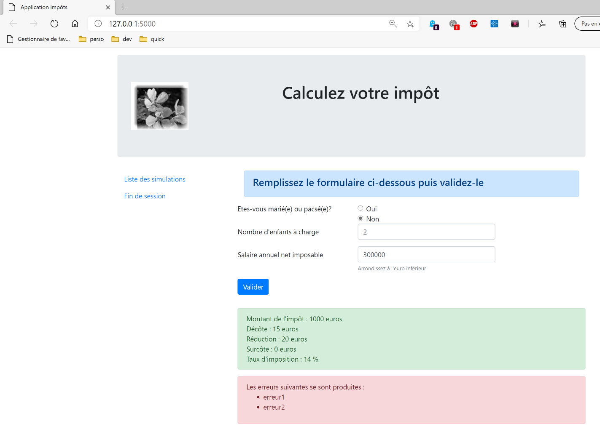
32.6.5. Calcul du modèle de la vue
Une fois l’aspect visuel de la vue déterminé, on peut procéder au calcul du modèle de la vue en conditions réelles. Rappelons les codes d’état qui mènent à cette vue. On les trouve dans le fichier de configuration :
- {
- # vue du calcul de l'impôt
- "états": [
- ** **# /authentifier-utilisateur réussite
- ** *200,*
- ** **# /calculer-impot réussite
- ** *300,*
- ** **# /calculer-impot échec
- ** *301,*
- ** **# /afficher-calcul-impot
- ** **800
- ** ]**,
- "view_name": "views/vue-calcul-impot.html",
- "model_for_view": ModelForCalculImpotView()
- },
Ce sont donc les codes d’état [200, 300, 301, 800] qui font afficher la vue de calcul de l’impôt. Pour retrouver la signification de ces codes, on peut s’aider des tests [Postman] réalisés sur l’application jSON :
- [authentifier-utilisateur-200] : 200 est le code d’état à l’issue d’une action [authentifier-utilisateur] réussie : on présente alors le formulaire de calcul d’impôt vide ;
- [calculer-impot-300] : 300 est le code d’état à l’issue d’une action [calculer-impot] réussie. On affiche alors le formulaire de calcul avec les données qui y ont été saisies et le montant de l’impôt. L’utilisateur peut alors refaire un autre calcul ;
- le code d’état [301] est celui obtenu pour un calcul d’impôt erroné ;
- le code d’état [800] sera présenté ultérieurement. Nous ne l’avons pas encore rencontré ;
Maintenant que nous savons à quels moments doit être affiché le formulaire de calcul de l’impôt, on peut calculer son modèle dans la classe [ModelForCalculImpotView] :

- from flask import Request
- from werkzeug.local import LocalProxy
- from InterfaceModelForView import InterfaceModelForView
- class ModelForCalculImpotView(InterfaceModelForView):
- def get_model_for_view(self, request: Request, session: LocalProxy, config: dict, résultat: dict) -> dict:
- # on encapsule les données de la vue dans modèle
- modèle = {}
- # état de l'application
- état = résultat["état"]
- # le modèle dépend de l'état
- if état in [200, 800]:
- # affichage initial d'un formulaire vide
- modèle["success"] = False
- modèle["error"] = False
- modèle["checkedNon"] = 'checked="checked"'
- modèle["checkedOui"] = ""
- modèle["enfants"] = ""
- modèle["salaire"] = ""
- elif état == 300:
- # réussite du calcul - affichage du résultat
- modèle["success"] = True
- modèle["error"] = False
- modèle["impôt"] = f"Montant de l'impôt : {résultat['réponse']['impôt']} euros"
- modèle["décôte"] = f'Décôte : {résultat["réponse"]["décôte"]} euros'
- modèle["réduction"] = f"Réduction : {résultat['réponse']['réduction']} euros"
- modèle["surcôte"] = f'Surcôte : {résultat["réponse"]["surcôte"]} euros'
- modèle["taux"] = f"Taux d'imposition : {résultat['réponse']['taux'] * 100} %"
- # formulaire rétabli avec les valeurs saisies
- modèle["checkedOui"] = 'checked="checked"' if request.form.get("marié") == "oui" else ""
- modèle["checkedNon"] = 'checked="checked"' if request.form.get("marié") == "non" else ""
- modèle["enfants"] = request.form.get("enfants")
- modèle["salaire"] = request.form.get("salaire")
- elif état == 301:
- # erreur rencontrée - formulaire rétabli avec les valeurs saisies
- modèle["checkedOui"] = 'checked="checked"' if request.form.get("marié") == "oui" else ""
- modèle["checkedNon"] = 'checked="checked"' if request.form.get("marié") == "non" else ""
- modèle["enfants"] = request.form.get("enfants")
- modèle["salaire"] = request.form.get("salaire")
- # erreur
- modèle["success"] = False
- modèle["error"] = True
- modèle["erreurs"] = ""
- for erreur in résultat['réponse']:
- modèle['erreurs'] += f"<li>{erreur}</li>"
- # options du menu
- modèle["optionsMenu"] = [
- ** {*"text": 'Liste des simulations', "url": '/lister-simulations'},*
- ** {*"text": 'Fin de session', "url": '/fin-session'}]*
- # on rend le modèle
- return modèle
Commentaires
- ligne 12 : la vue à afficher dépend du code d’état rendu par le contrôleur ;
- lignes 14-21 : affichage d’un formulaire vide ;
- lignes 22-35 : cas du calcul d’impôt réussi. On réaffiche les valeurs saisies ainsi que le montant de l’impôt ;
- lignes 36-47 : cas de l’échec du calcul d’impôt ;
- lignes 49-52 : calcul des deux options du menu ;
32.6.6. Tests [Postman]
On initialise une session HTML avec la requête [init-session-html-700] puis on s’authentifie avec la requête [authentifier-utilisateur-200]. Puis nous utilisons la requête [calculer-impot-300] suivante :
La réponse du serveur est la suivante :


Maintenant essayons la requête [calculer-impot-301] suivante :
La réponse du serveur est la suivante :

Maintenant essayons un cas inattendu, celui où il manque des paramètres au POST. Ce cas n’est pas possible dans le fonctionneent normal de l’application. Mais n’importe qui peut ‘bricoler’ une requête HTTP comme nous le faisons maintenant :


- en [6], nous avons décoché le paramètre posté [marié] ;
La réponse du serveur est la suivante :
- en [3], le message d’erreur du serveur ;

Dans cette application, nous avions le choix. Nous pouvions donner à ce cas d’erreur un code d’état qui envoie la page des erreurs inattendues. Nous avons dans cette application choisi pour chaque contrôleur deux codes d’état :
- [xx0] : pour une réussite ;
- [xx1] : pour un échec ;
Pour les cas d’échec on peut diversifier les codes d’état pour avoir une gestion plus fine des erreurs. Nous aurions pu avoir par exemple :
- [xx1] : pour des erreurs à afficher sur la page qui a provoqué l’erreur ;
- [xx2] : pour des erreurs inattendues dans le cadre d’une utilisation normale de l’application ;
32.7. La vue de la liste des simulations

32.7.1. Présentation de la vue
La vue qui présente la liste des simulations est la suivante :

La vue générée par le code [vue-liste-simulations.html] a trois parties :
- 1 : le bandeau supérieur est généré par le fragment [v-bandeau.html] déjà présenté ;
- 3 : le tableau des simulations généré par le fragment [v-liste-simulations.html] ;
- 2 : un menu présentant deux liens, généré par le fragment [v-menu.html] déjà présenté ;
La vue des simulations est générée par le code [vue-liste-simulations.html] suivant :
- <!-- document HTML -->
- <!doctype html>
- <html lang="fr">
- <head>
- <!-- Required meta tags -->
- <meta charset="utf-8">
- <meta name="viewport" content="width=device-width, initial-scale=1, shrink-to-fit=no">
- <!-- Bootstrap CSS -->
- <link rel="stylesheet" href="https://maxcdn.bootstrapcdn.com/bootstrap/4.4.1/css/bootstrap.min.css">
- <title>Application impôts</title>
- </head>
- <body>
- <div class="container">
- <!-- bandeau -->
- {% include "fragments/v-bandeau.html" %}
- <!-- ligne à deux colonnes -->
- <div class="row">
- <!-- menu sur trois colonnes-->
- <div class="col-md-3">
- {% include "fragments/v-menu.html" %}
- </div>
- <!-- liste des simulations sur 9 colonnes-->
- <div class="col-md-9">
- {% include "fragments/v-liste-simulations.html" %}
- </div>
- </div>
- </div>
- </body>
- </html>
Commentaires
- ligne 16 : inclusion du bandeau de l’application [1] ;
- ligne 21 : inclusion du menu [2]. Il sera affiché sur trois colonnes sous le bandeau ;
- ligne 26 : inclusion du tableau des simulations [3]. Il sera affiché sur neuf colonnes sous le bandeau et à droite du menu ;
Nous avons déjà commenté deux des trois fragments de cette vue :
Le fragment [v-liste-simulations.html] est le suivant :
- {% if modèle.simulations is undefined or modèle.simulations|length==0 %}
- <!-- message sur fond bleu -->
- <div class="alert alert-primary" role="alert">
- <h4>Votre liste de simulations est vide</h4>
- </div>
- {% endif %}
- {% if modèle.simulations is defined and modèle.simulations|length!=0 %}
- <!-- message sur fond bleu -->
- <div class="alert alert-primary" role="alert">
- <h4>Liste de vos simulations</h4>
- </div>
- <!-- tableau des simulations -->
- <table class="table table-sm table-hover table-striped">
- <!-- entêtes des six colonnes du tableau -->
- <thead>
- <tr>
- <th scope="col">#</th>
- <th scope="col">Marié</th>
- <th scope="col">Nombre d'enfants</th>
- <th scope="col">Salaire annuel</th>
- <th scope="col">Montant impôt</th>
- <th scope="col">Surcôte</th>
- <th scope="col">Décôte</th>
- <th scope="col">Réduction</th>
- <th scope="col">Taux</th>
- <th scope="col"></th>
- </tr>
- </thead>
- <!-- corps du tableau (données affichées) -->
- <tbody>
- <!-- on affiche chaque simulation en parcourant le tableau des simulations -->
- {% for simulation in modèle.simulations %}
- <!-- affichage d'une ligne du tableau avec 6 colonnes - balise <tr> -->
- <!-- colonne 1 : entête ligne (n° simulation) - balise <th scope='row' -->
- <!-- colonne 2 : valeur paramètre [marié] - balise <td> -->
- <!-- colonne 3 : valeur paramètre [enfants] - balise <td> -->
- <!-- colonne 4 : valeur paramètre [salaire] - balise <td> -->
- <!-- colonne 5 : valeur paramètre [impôt] (de l'impôt) - balise <td> -->
- <!-- colonne 6 : valeur paramètre [surcôte] - balise <td> -->
- <!-- colonne 7 : valeur paramètre [décôte] - balise <td> -->
- <!-- colonne 8 : valeur paramètre [réduction] - balise <td> -->
- <!-- colonne 9 : valeur paramètre [taux] (de l'impôt) - balise <td> -->
- <!-- colonne 10 : lien de suppression de la simulation - balise <td> -->
- <tr>
- <th scope="row">{{simulation.id}}</th>
- <td>{{simulation.marié}}</td>
- <td>{{simulation.enfants}}</td>
- <td>{{simulation.salaire}}</td>
- <td>{{simulation.impôt}}</td>
- <td>{{simulation.surcôte}}</td>
- <td>{{simulation.décôte}}</td>
- <td>{{simulation.réduction}}</td>
- <td>{{simulation.taux}}</td>
- <td><a href="/supprimer-simulation/{{simulation.id}}">Supprimer</a></td>
- </tr>
- {% endfor %}
- </tr>
- </tbody>
- </table>
- {% endif %}
Commentaires
- un tableau HTML est réalisé avec la balise <table> (lignes 15 et 62) ;
- les entêtes des colonnes du tableau se font à l’intérieur d’une balise <thead> (table head, lignes 17, 30). La balise <tr> (table row, lignes 18 et 29) délimitent une ligne. Lignes 19-28, la balise <th> (table header) définit un entête de colonne. Il y en a donc dix. [scope="col"] indique que l’entête s’applique à la colonne. [scope="row"] indique que l’entête s’applique à la ligne ;
- lignes 32-61 : la balise <tbody> encadre les données affichées par le tableau ;
- lignes 47-58 : la balise <tr> encadre une ligne du tableau ;
- ligne 48 : la balise <th scope=’row’> définit l’entête de la ligne. le navigateur fait ressortir cet entête ;
- lignes 49-57 : chaque balise <td> (table data) définit une colonne de la ligne ;
- ligne 34 : la liste des simulations sera trouvée dans le modèle [modèle.simulations] qui est une liste de dictionnaires ;
- ligne 57 : un lien pour supprimer la simulation. L’URL utilise le n° de la simulation affichée dans la ligne ;
32.7.2. Test visuel
Nous créons un script de test pour la vue [vue-liste-simulations.html] :
Le script [test_vue_liste_simulations] est le suivant :

- from flask import Flask, make_response, render_template
- # application Flask
- app = Flask(__name__, template_folder="../templates", static_folder="../static")
- # Home URL
- @app.route('/')
- def index():
- # on encapsule les données de la pagé dans modèle
- modèle = {}
- # on met les simulations au format attendu par la page
- modèle["simulations"] = [
- ** {**
- ** *"id": 7,*
- ** *"marié": "oui",*
- ** *"enfants": 2,*
- ** *"salaire": 60000,*
- ** *"impôt": 448,*
- ** *"décôte": 100,*
- ** *"réduction": 20,*
- ** *"surcôte": 0,*
- ** *"taux": *0.14
- ** },**
- ** {**
- ** *"id": 19,*
- ** *"marié": "non",*
- ** *"enfants": 2,*
- ** *"salaire": 200000,*
- ** *"impôt": 25600,*
- ** *"décôte": 0,*
- ** *"réduction": 0,*
- ** *"surcôte": 8400,*
- ** *"taux": *0.45
- ** }**
- ** ]**
- # menu
- modèle["optionsMenu"] = [
- ** {*"text": "Calcul de l'impôt", "url": '/afficher-calcul-impot'},*
- ** {*"text": 'Fin de session', "url": '/fin-session'}*]
- # affichage de la page
- return make_response(render_template("views/vue-liste-simulations.html", modèle=modèle))
- # main
- if __name__ == '__main__':
- app.config.update(ENV="development", DEBUG=True)
- app.run()
Commentaires
- lignes 12-35 : on met deux simulations dans le modèle
- lignes 37-39 : le tableau des options de menu ;
Affichons cette vue en exécutant ce script. On obtient le résultat suivant :

On travaille sur cette vue jusqu’à ce que le résultat obtenu visuellement nous convienne. On peut ensuite passer à l’intégration de la vue dans l’application web en cours d’écriture.
32.7.3. Calcul du modèle de la vue
Une fois l’aspect visuel de la vue déterminé, on peut procéder au calcul du modèle de la vue en conditions réelles. Rappelons les codes d’état qui mènent à cette vue. On les trouve dans le fichier de configuration :
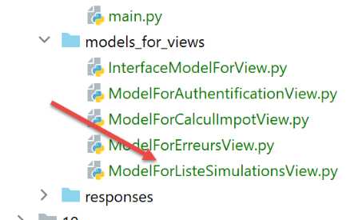
- {
- # vue de la liste des simulations
- "états": [
- ** **# /lister-simulations
- ** *500,*
- ** **# /supprimer-simulation
- ** **600
- ** ]**,
- "view_name": "views/vue-liste-simulations.html",
- "model_for_view": ModelForListeSimulationsView()
- }
Ce sont donc les codes d’état [500, 600] qui font afficher la vue des simulations. Pour retrouver la signification de ces codes, on peut s’aider des tests [Postman] réalisés sur l’application jSON :
- [lister-simulations-500] : 500 est le code d’état à l’issue d’une action [lister-simulations] réussie : on présente alors la liste des simulations réalisées par l’utilisateur ;
- [supprimer-simulation-600] : 600 est le code d’état à l’issue d’une action [supprimer-simulation] réussie. On présente alors la nouvelle liste des simulations obtenue après cette suppression ;
Maintenant que nous savons à quels moments doit être affichée la liste des simulations, on peut calculer son modèle dans la classe [ModelForListeSimulationsView] :
- from flask import Request
- from werkzeug.local import LocalProxy
- from InterfaceModelForView import InterfaceModelForView
- class ModelForListeSimulationsView(InterfaceModelForView):
- def get_model_for_view(self, request: Request, session: LocalProxy, config: dict, résultat: dict) -> dict:
- # on encapsule les données de la pagé dans modèle
- modèle = {}
- # les simulations sont trouvées dans la réponse du contrôleur qui a exécuté l'action
- # sous la forme d'un tableau de dictionnaires TaxPayer
- modèle["simulations"] = résultat["réponse"]
- # menu
- modèle["optionsMenu"] = [
- ** {*"text": "Calcul de l'impôt", "url": '/afficher-calcul-impot'},*
- ** {*"text": 'Fin de session', "url": '/fin-session'}]*
- # on rend le modèle
- return modèle
Commentaires
- lignes 13 : les simulations à afficher sont trouvées dans [résultat["réponse"]] ;
- lignes 15-17 : les options du menu à afficher ;
32.7.4. Tests [Postman]
On
- initialise une session HTML ;
- s’authentifie ;
- fait trois calculs d’impôt ;
Le test [lister-simulations-500] nous permet d’avoir le code d’état 500. Il correspond à une demande pour voir les simulations :
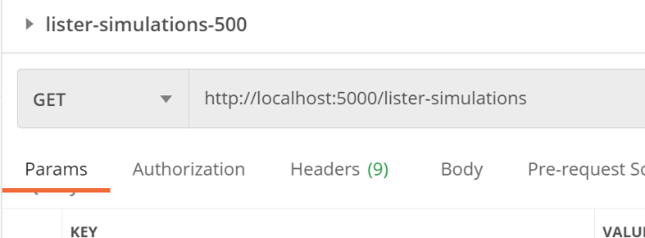
La réponse du serveur est la suivante :
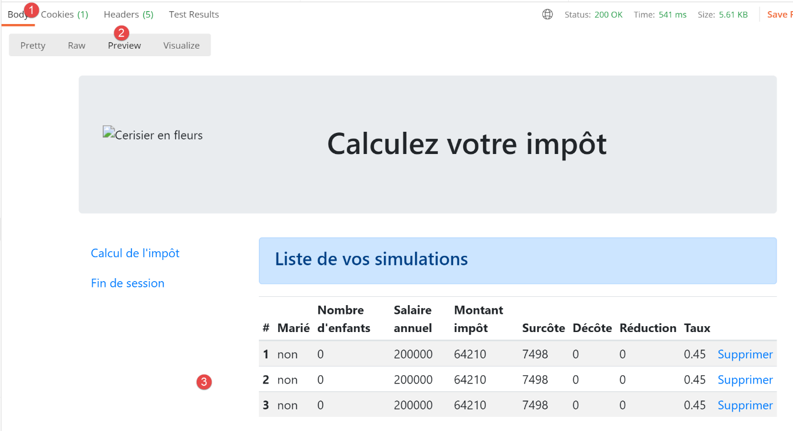
Le test [supprimer-simulation-600] nous permet d’avoir le code d’état 600. On va ici supprimer la simulation n° 2.
Le résultat renvoyé est une liste de simulations avec une simulation en moins :


32.8. La vue des erreurs inattendues
On appelle ici, erreur inattendue, une erreur qui n’aurait pas dû se produire dans le cadre d’une utilisation normale de l’application web. Par exemple, le fait de demander un calcul d’impôt sans être authentifié. Rien n’empêche un utilisateur de taper directement l’URL [/calcul-impot] dans son navigateur. Par ailleurs, comme nous l’avons vu, il peut faire un POST sur l’URL [/calcul-impot] en n’envoyant pas les paramètres attendus. On a vu que notre application web savait répondre correctement à cette requête. On appellera, erreur inattendue, une erreur qui ne devrait pas se produire dans le cadre de l’application HTML. Si elle se produit, c’est que probablement quelqu’un essaie de ‘hacker’ l’application. Par souci de pédagogie, on a décidé d’afficher une vue d’erreurs pour ces cas. Dans la réalité, on pourrait réafficher la dernière page envoyée au client. Il suffit pour cela d’enregistrer en session, la dernière réponse HTML envoyée. En cas d’erreur inattendue, on renvoie cette réponse. Ainsi l’utilisateur aura l’impression que le serveur ne répond pas à ses erreurs puisque la page affichée ne change pas.
32.8.1. Présentation de la vue
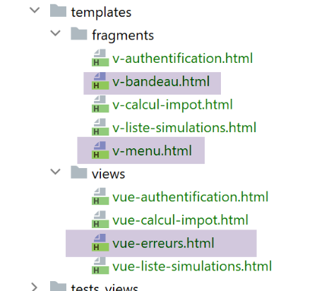
La vue qui présente les erreurs inattendues est la suivante :

La vue générée par le code [vue-erreurs.html] a trois parties :
- 1 : le bandeau supérieur est généré par le fragment [v-bandeau.html] déjà présenté ;
- 2 : la ou les erreurs inattendues ;
- 3 : un menu présentant trois liens, généré par le fragment [v-menu.html] déjà présenté ;
La vue des erreurs inattendues est générée par le script [vue-erreurs.html] suivant :
- <!-- document HTML -->
- <!doctype html>
- <html lang="fr">
- <head>
- <!-- Required meta tags -->
- <meta charset="utf-8">
- <meta name="viewport" content="width=device-width, initial-scale=1, shrink-to-fit=no">
- <!-- Bootstrap CSS -->
- <link rel="stylesheet" href="https://maxcdn.bootstrapcdn.com/bootstrap/4.4.1/css/bootstrap.min.css">
- <title>Application impôts</title>
- </head>
- <body>
- <div class="container">
- <!-- bandeau sur 12 colonnes -->
- {% include "fragments/v-bandeau.html" %}
- <!-- ligne à deux sections -->
- <div class="row">
- <!-- menu sur 3 colonnes-->
- <div class="col-md-3">
- {% include "fragments/v-menu.html" %}
- </div>
- <!-- liste des erreurs sur 9 colonnes -->
- <div class="col-md-9">
- <div class="alert alert-danger" role="alert">
- Les erreurs inattendues suivantes se sont produites :
- <ul>{{modèle.erreurs|safe}}</ul>
- </div>
- </div>
- </div>
- </div>
- </body>
- </html>
Commentaires
- ligne 16 : inclusion du bandeau de l’application [1] ;
- ligne 21 : inclusion du menu [3]. Il sera affiché sur trois colonnes sous le bandeau ;
- lignes 24-29 : affichage de la zone d’erreurs sur neuf colonnes ;
- ligne 25 : cet affichage se fera dans un cadre Bootstrap à fond rose ;
- ligne 26 : un texte de présentation ;
- ligne 27 : la balise <ul> encadre une liste à puces. Cette liste à puces est fournie par le modèle [modèle.erreurs] ;
Nous avons déjà commenté les deux fragments de cette vue :
32.8.2. Test visuel
Nous créons un script de test pour la vue [vue-erreurs.html] :

- from flask import Flask, render_template, make_response
- # application Flask
- app = Flask(__name__, template_folder="../templates", static_folder="../static")
- # Home URL
- @app.route('/')
- def index():
- # on encapsule les données de la pagé dans modèle
- modèle = {}
- # on construit une liste HTML des erreurs
- content = ""
- for erreur in ["erreur1", "erreur2"]:
- content += f"<li>{erreur}</li>"
- modèle["erreurs"] = content
- # options du menu
- modèle["optionsMenu"] = [
- ** {*"text": "Calcul de l'impôt", "url": '/calculer-impot'},*
- ** {*"text": 'Liste des simulations', "url": '/lister-simulations'},*
- ** {*"text": 'Fin de session', "url": '/fin-session'}]*
- # affichage de la page
- return make_response(render_template("views/vue-erreurs.html", modèle=modèle))
- # main
- if __name__ == '__main__':
- app.config.update(ENV="development", DEBUG=True)
- app.run()
Commentaires
- lignes 11-15 : construction de la liste HTML des erreurs ;
- lignes 17-20 : le tableau des options de menu ;
Exécutons ce script. On obtient le résultat suivant :
On travaille sur cette vue jusqu’à ce que le résultat obtenu visuellement nous convienne. On peut ensuite passer à l’intégration de la vue dans l’application web en cours d’écriture.

32.8.3. Calcul du modèle de la vue
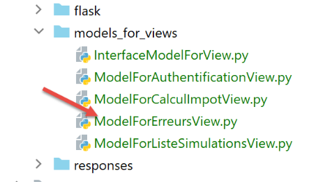
Une fois l’aspect visuel de la vue déterminé, on peut procéder au calcul du modèle de la vue en conditions réelles. Rappelons les codes d’état qui mènent à cette vue. On les trouve dans le fichier de configuration :
- # les vues HTML et leurs modèles dépendent de l'état rendu par le contrôleur
- "views": [
- ** {**
- ** **# vue d'authentification
- ** *"états": [*
- ** **# /init-session réussite
- ** *700,*
- ** **# /fin-session
- ** *400,*
- ** **# /authentifier-utilisateur échec
- ** **201
- ** ]**,
- "view_name": "views/vue-authentification.html",
- "model_for_view": ModelForAuthentificationView()
- },
- {
- # vue du calcul de l'impôt
- "états": [
- ** **# /authentifier-utilisateur réussite
- ** *200,*
- ** **# /calculer-impot réussite
- ** *300,*
- ** **# /calculer-impot échec
- ** *301,*
- ** **# /afficher-calcul-impot
- ** **800
- ** ]**,
- "view_name": "views/vue-calcul-impot.html",
- "model_for_view": ModelForCalculImpotView()
- },
- {
- # vue de la liste des simulations
- "états": [
- ** **# /lister-simulations
- ** *500,*
- ** **# /supprimer-simulation
- ** **600
- ** ]**,
- "view_name": "views/vue-liste-simulations.html",
- "model_for_view": ModelForListeSimulationsView()
- }
- ],
- # vue des erreurs inattendues
- "view-erreurs": {
- "view_name": "views/vue-erreurs.html",
- "model_for_view": ModelForErreursView()
- },
Ce sont les codes d’état qui ne mènent pas à une vue HTML des lignes 3-41 qui font afficher la vue des erreurs inattendues.
Le calcul du modèle de la vue [vue-erreurs.html] est fait par la classe [ModelForErreursView] suivante :
- from flask import Request
- from werkzeug.local import LocalProxy
- from InterfaceModelForView import InterfaceModelForView
- class ModelForErreursView(InterfaceModelForView):
- def get_model_for_view(self, request: Request, session: LocalProxy, config: dict, résultat: dict) -> dict:
- # le modèle
- modèle = {}
- # les erreurs
- modèle["erreurs"] = ""
- for erreur in résultat['réponse']:
- modèle['erreurs'] += f"<li>{erreur}</li>"
- # menu
- modèle["optionsMenu"] = [
- ** {*"text": "Calcul de l'impôt", "url": '/afficher-calcul-impot'},*
- ** {*"text": 'Liste des simulations', "url": '/lister-simulations'},*
- ** {*"text": 'Fin de session', "url": '/fin-session'}]*
- # on rend le modèle
- return modèle
Commentaires
- lignes 11-14 : calcul du modèle [modèle.erreurs] utilisé par la vue [vue-erreurs.html] ;
- lignes 16-197 : calcul du modèle [modèle.optionsMenu] utilisé par le fragment [v-menu.html] ;
32.8.4. Tests [Postman]
On fait :
- l’action [/init-session/html] ;
- puis l’action [/init-session/x] ;
La réponse HTML est alors la suivante :

32.9. Implémentation des actions du menu de l’application
Nous allons ici traiter de l’implémentation des actions du menu. Rappelons la signification des liens que nous avons rencontrés
Vue | Lien | Cible | Rôle |
Calcul de l’impôt | [Liste des simulations] | [/lister-simulations] | Demander la liste des simulations |
[Fin de session] | [/fin-session] | Demander la fin de la session | |
Liste des simulations | [Calcul de l’impôt] | [/afficher-calcul-impot] | Afficher la vue du calcul d’impôt |
[Fin de session] | [/fin-session] | Demander la fin de la session | |
Erreurs inattendues | [Calcul de l’impôt] | [/afficher-calcul-impot] | Afficher la vue du calcul d’impôt |
[Liste des simulations] | [/lister-simulations] | Demander la liste des simulations | |
[Fin de session] | [/fin-session] | Demander la fin de la session |
Il faut rappeler qu’un clic sur un lien provoque un GET vers la cible du lien. Les actions [/lister-simulations, /fin-session] ont été implémentées avec une opération GET, ce qui nous permet de les mettre comme cibles de liens. Lorsque l’action se fait par un POST, l’utilisation d’un lien n’est plus possible sauf à l’associer avec du Javascript.
32.9.1. L’action [/afficher-calcul-impot]
Des actions ci-dessus, il apparaît que l’action [/afficher-calcul-impot] n’a pas encore été implémentée. C’est une opération de navigation entre deux vues : le serveur jSON ou XML n’a aucune raison de l’implémenter car ils n’ont pas la notion de vue. C’est le serveur HTML qui introduit cette notion.
Il nous faut donc implémenter l’action [/afficher-calcul-impot]. Cela va nous permettre de réviser le mode opératoire de l’implémentation d’une action au sein du serveur.
Tout d’abord, il nous faut ajouter un nouveau contrôleur secondaire. Nous l’appellerons [AfficherCalculImpotController] :

Ce contrôleur doit être ajouté dans le fichier de configuration [config] :
- # les contrôleurs
- from AfficherCalculImpotController import AfficherCalculImpotController
- from AuthentifierUtilisateurController import AuthentifierUtilisateurController
- from CalculerImpotController import CalculerImpotController
- from CalculerImpotsController import CalculerImpotsController
- from FinSessionController import FinSessionController
- from GetAdminDataController import GetAdminDataController
- …
- # actions autorisées et leurs contrôleurs
- "controllers": {
- # initialisation d'une session de calcul
- "init-session": InitSessionController(),
- # authentification d'un utilisateur
- "authentifier-utilisateur": AuthentifierUtilisateurController(),
- # calcul de l'impôt en mode individuel
- "calculer-impot": CalculerImpotController(),
- # calcul de l'impôt en mode lots
- "calculer-impots": CalculerImpotsController(),
- # liste des simulations
- "lister-simulations": ListerSimulationsController(),
- # suppression d'une simulation
- "supprimer-simulation": SupprimerSimulationController(),
- # fin de la session de calcul
- "fin-session": FinSessionController(),
- # affichage de la vue de calcul de l'impôt
- "afficher-calcul-impot": AfficherCalculImpotController(),
- # obtention des données de l'administration fiscale
- "get-admindata": GetAdminDataController(),
- # main controller
- "main-controller": MainController()
- },
- …
- # les vues HTML et leurs modèles dépendent de l'état rendu par le contrôleur
- "views": [
- ** {**
- ** **# vue d'authentification
- ** **…
- ** },**
- ** {**
- ** **# vue du calcul de l'impôt
- ** *"états": [*
- ** **# /authentifier-utilisateur réussite
- ** *200,*
- ** **# /calculer-impot réussite
- ** *300,*
- ** **# /calculer-impot échec
- ** *301,*
- ** **# /afficher-calcul-impot
- ** **800
- ** ]**,
- "view_name": "views/vue-calcul-impot.html",
- "model_for_view": ModelForCalculImpotView()
- },
- {…
- }
-
],
-
ligne 2 : le nouveau contrôleur ;
- ligne 28 : la nouvelle action et son contrôleur ;
- ligne 51 : le nouveau contrôleur rendra le code d’état 800. Sur un changement de vues, il ne peut y avoir d’erreur. La vue affichée est la vue [vue-calcul-impot.html] que nous avons étudiée, expliquée et testée ;
Le contrôleur [AfficherCalculImpotController] sera le suivant :
- from flask_api import status
- from werkzeug.local import LocalProxy
- from InterfaceController import InterfaceController
- class AfficherCalculImpotController(InterfaceController):
- def execute(self, request: LocalProxy, session: LocalProxy, config: dict) -> (dict, int):
- # on récupère les éléments du path
- dummy, action = request.path.split('/')
- # changement de vue - juste un code d'état à positionner
- return {"action": action, "état": 800, "réponse": ""}, status.HTTP_200_OK
Commentaires
- ligne 6 : comme les autres contrôleurs secondaires, le nouveau contrôleur implémente l’interface [InterfaceController] ;
- ligne 13 : les changements de vue sont simples à implémenter : il suffit de rendre un code d’état associé à la vue cible, ici le code 800 comme il a été vu plus haut ;
32.9.2. L’action [/fin-session]
L’action [/fin-session] est particulière. Elle n’amène pas directement à une vue mais à une redirection. Rappelons que les redirections sont configurées dans la configuration [config] de la façon suivante :
- # redirections
- "redirections": [
- ** {**
- ** *"états": [*
- ** *400, *# /fin-session réussi
- ** ]**,
- # redirection vers
- "to": "/init-session/html",
- }
- ],
Il n’y a qu’une redirection dans l’application :
- lorsque le contrôleur rend le code d’état [400] (ligne 5), il faut rediriger le client vers l’URL [http://machine:port/chemin/init-session/html] (ligne 8) ;
Le code d’état [400] est le code rendu suite à une action [/fin-session] réussie. Pourquoi faut-il alors rediriger le client l’URL [/init-session/html] ? Parce que le code de l’action [/fin-session] supprime le type de la session présent dans la session web. On ne sait plus alors qu’on est dans une session html. Il faut le redire. On le fait à l’aide de l’action [/init-session/html].
Les redirections HTML sont gérées par la classe [HtmlResponse] :
- def build_http_response(self, request: LocalProxy, session: LocalProxy, config: dict, status_code: int,
- résultat: dict) -> (Response, int):
- # la réponse HTML dépend du code d'état rendu par le contrôleur
- état = résultat["état"]
- # faut-il faire une redirection ?
- for redirection in config["redirections"]:
- # états nécessitant une redirection
- états = redirection["états"]
- if état in états:
- # il faut faire une redirection
- return redirect(f"{redirection['to']}"), status.HTTP_302_FOUND
- # à un état, correspond une vue
- # on cherche celle-ci dans la liste des vues
-
..
-
les lignes 6-12 traitent les redirections ;
-
ligne 7 : config[‘redirections’] est une liste de redirections. Chaque redirection est un dictionnaire avec les clés :
-
[états] : les états rendus par le contrôleur qui mènent à une redirection ;
-
[to] : l’adresse de redirection ;
-
lignes 7-12 : on parcourt la liste des redirections ;
- ligne 9 : pour chaque redirection, on récupère les états qui y mènent ;
- ligne 10 : si l’état testé est dans cette liste, alors on fait la redirection, ligne 12 ;
-
ligne 12 : on rappelle que la méthode [build_http_response] doit rendre un tuple à deux éléments :
-
[response] : la réponse HTTP à faire. Celle-ci est construite avec la fonction [redirect] dont le paramètre est l’adresse de redirection ;
- [status_code] : le code de statut de la réponse HTTP, ici le code [status.HTTP_302_FOUND] qui indique au client qu’il doit se rediriger ;
Faisons un test [Postman]. On :
- initialise une session HTML [init-session/html] ;
- s’authentifie [/authentifier-utilisateur] ;
- termine la session [/fin-session] ;
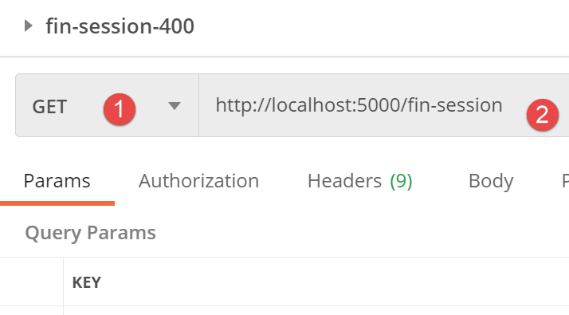
La réponse du serveur est la suivante :
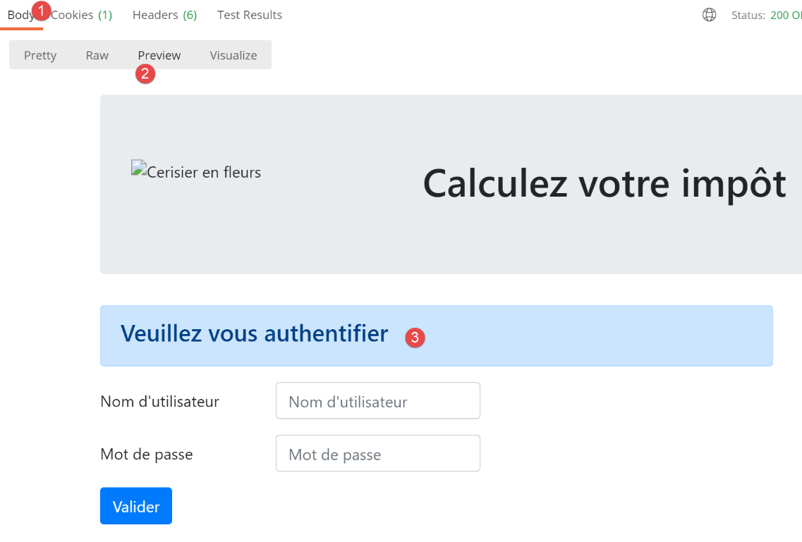
On a obtenu la vue d’authentification. C’est bien elle qu’on attendait. Maintenant, voyons comment elle a été obtenue. Passons sur la console [Postman] (Ctrl-Alt-C) :

- en [1], l’action [/fin-session] ;
- en [2-3], le code 302 de statut HTTP rendu par le serveur indique au client qu’il dit se rediriger ;
- en [4], le client [Postman] suit la redirection ;
32.10. Tests de l’application HTML en conditions réelles
Le code a été écrit et chaque action testée avec [Postman]. Il nous reste à tester l’enchaînement des vues en situation réelle. Il nous faut un moyen d’initialiser la session HTML. On sait qu’il faut envoyer au serveur la requête [/init-session/html]. Ce n’est pas une URL très pratique. On préfèrerait démarrer avec l’URL [/].
Nous avons écrit dans le script principal [main] la route suivante :
- from flask import request, Flask, session, url_for, redirect
- …
- …
- @app.route('/', methods=['GET'])
- def index() -> tuple:
- # redirection vers /init-session/html
- return redirect(url_for("init_session", type_response="html"), status.HTTP_302_FOUND)
- …
- # init-session
- @app.route('/init-session/<string:type_response>', methods=['GET'])
- def init_session(type_response: str) -> tuple:
- # on exécute le contrôleur associé à l'action
-
return front_controller()
-
lignes 4-7 : gestion de la route [/]. Le point d’entrée de l’application web sera l’URL[/init-session/html] (ligne 10). Aussi ligne 7, nous redirigeons le client vers cette URL :
-
la fonction [url_for] est importée ligne 1. Elle a ici deux paramètres (ligne 7) :
-
le 1er paramètre est le nom d’une des fonctions de routage, ici celle de la ligne 11. On voit que cette fonction attend un paramètre [type_response] qui est le type (json, xml, html) de réponse souhaité par le client ;
- le 2ième paramètre reprend le nom du paramètre de la ligne 11, [type_response], et lui donne une valeur. S’il y avait d’autres paramètres, on répéterait l’opération pour chacun d’eux ;
-
elle rend l’URL associée à la fonction désignée par les deux paramètres qui lui ont été donnés. Ici cela donnera l’URL de la ligne 10 où le paramètre est remplacé par sa valeur [/init-session/html] ;
-
la fonction [redirect] a été importée ligne 1. Elle a pour rôle d’envoyer un entête HTTP de redirection au client :
-
le 1er paramètre est l’URL vers laquelle le client doit être redirigé ;
- le 2ième paramètre est le code de statut de la réponse HTTP faite au client. Le code [status.HTTP_302_FOUND] correspond à une redirection HTTP ;
Nous sommes prêts. Nous présentons maintenant quelques enchaînements de vues.
Dans notre navigateur, nous activons le suivi des requêtes (F12 sur Chrome, Firefox, Edge) et nous demandons l’URL de démarrage [http://localhost:5000/]. La réponse du serveur est la suivante :

Si on regarde les échanges réseau qui ont eu lieu entre le client et le serveur :

- on voit qu’en [4, 5], le navigateur a reçu une demande de redirection vers l’URL [/init-session/html] ;
Remplissons le formulaire que nous avons reçu ;

Puis faisons quelques simulations :


Demandons la liste des simulations :

Supprimons la 1re simulation :

Terminons la session :

Le lecteur est invité à faire d’autres tests.